TEX Yoda Build Log & Review
The Board
The Tex Yoda is a somewhat coveted board in the keyboard community. Its limited availability and heavy price tag make it very rare. However, this keyboard has some very unique features along with high-quality parts to make it all worth it.
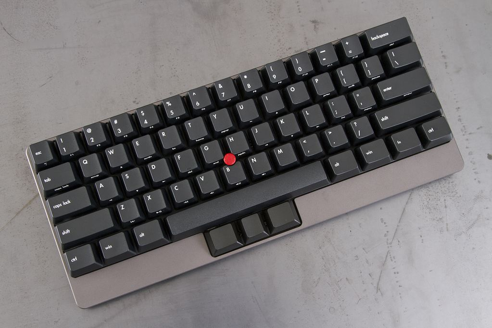
The most noticeable thing that distinguishes this keyboard from most others is that red dot you see right in the center. This will undoubtedly bring back memories of some old laptops that came with a TrackPoint as well. It’s simply an attachment that allows you to control the mouse movements without the need to reach all the way over to your mouse. Some refer to this as a pointing stick - I like TrackPoint as that’s how IBM wants it; some have a more appropriate term, however.
The Yoda also features a full aluminum body. This is great as it adds a fair amount of sturdiness to the board and it feels great; although it is very heavy. It’s a standard 60% layout with a few extra keys to act as the mouse clicks and for scrolling. Since these are normally DIY, you get the option of whichever switches you’d like. I chose Cherry MX Clears as they were all the rage when I picked this up. Although I’m not the biggest fan of Clears (I prefer Zealios over Clears, Greens over Zealios, Topre over Greens, and Buckling Springs over everything - but this is a discussion for another blog post), typing on this was still an amazing experience.
The layout, though not incredibly special as it’s almost exactly what you’d get with a Pok3r, is innovative and efficient. Firstly, the reason you’d be excited for a TrackPoint is to keep your hands on the home row without wasting time moving to the mouse. It takes some getting used to, but it’s a very natural habit once you learn exactly where to place your fingers. I’ve also never had any problems clicking with the bottom three keys.

If you’ve never used a 60%, this is a great one to do some learning on. Although the Yoda isn’t fully programmable it offers some unique shortcuts I haven’t found on any other boards. You’ve got standard media keys, home, page-up/page-down, and even scroll-up/scroll-down all in the function layer. It also has the arrow keys in the WASD and IJKL positions unlike the Poker II which has them in the WASD position and the Pok3r which has them in the IJKL. Options are nice and it’s actually the reason I have little use for the Pok3r over the Poker II, (although, nothing beats the [;’/ arrow keys as featured on the HHKB).
The Build
I’ve built a few keyboards in my day so I didn’t feel worried about messing up this expensive board. Building keyboards is usually a very straightforward process:
- Solder diodes onto the PCB
- Install switches onto the plate (if the board is plate-mounted as opposed to PCB-mounted, which this one is)
- Line up plate & switches onto the PCB
- Solder each switch
- Solder the chip
- Install drivers, create and upload firmware, or whatever the situation might be for your particular board.
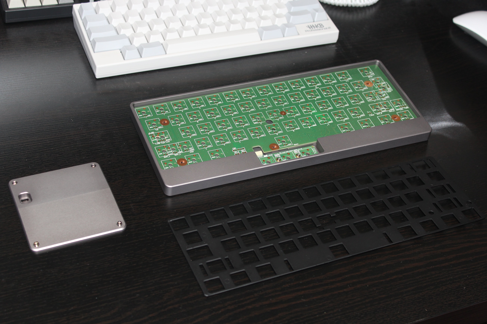 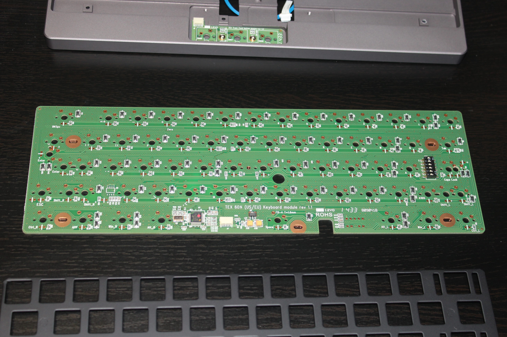 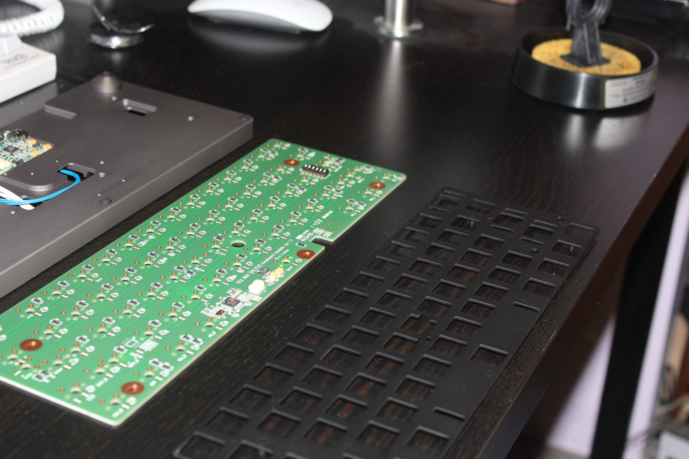 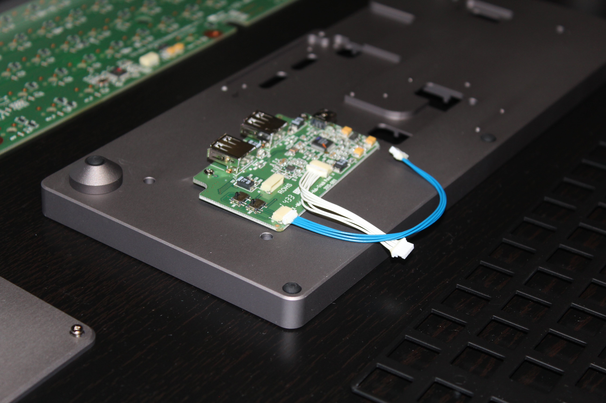
The Yoda came with the case, two PCBs, a plate, some wires, an attachment for the underside of the case, screws, and some other boring stuff.
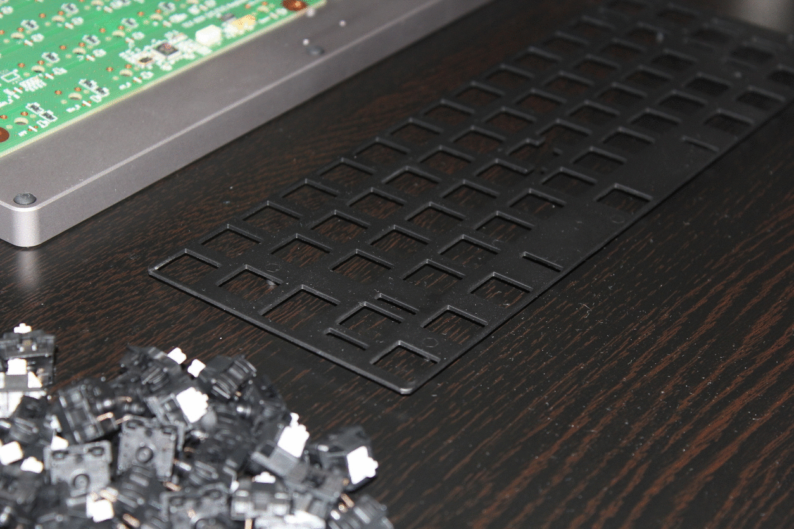
After monotonously snapping each switch in their proper spot, flip it over, be sure all the switch’s pins are straight, and align the PCB so it falls onto each switch.
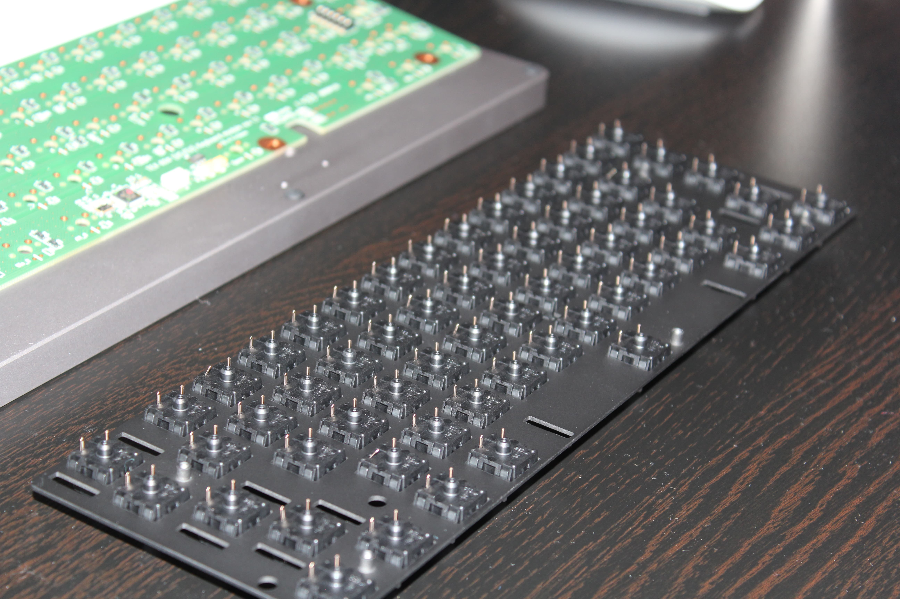 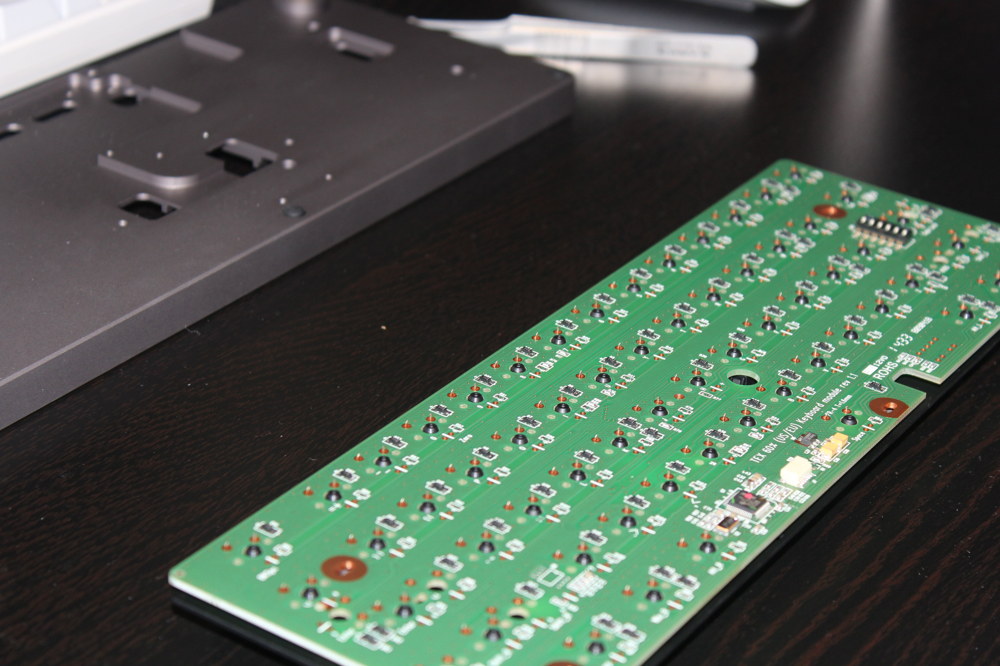
Unfortunately, I cannot solder and take pictures simultaneously but if you look closely you can see each soldered switch. Next, alight the TrackPoint in the case and place the PCB over it.
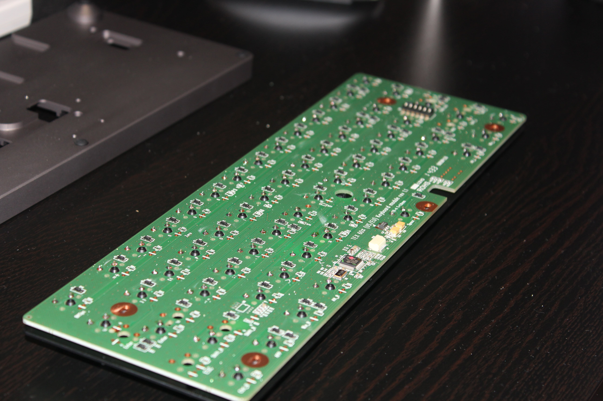 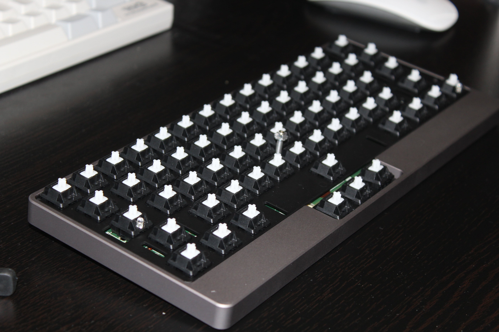
Finally, add your keycaps and TrackPoint and enjoy your new keyboard!
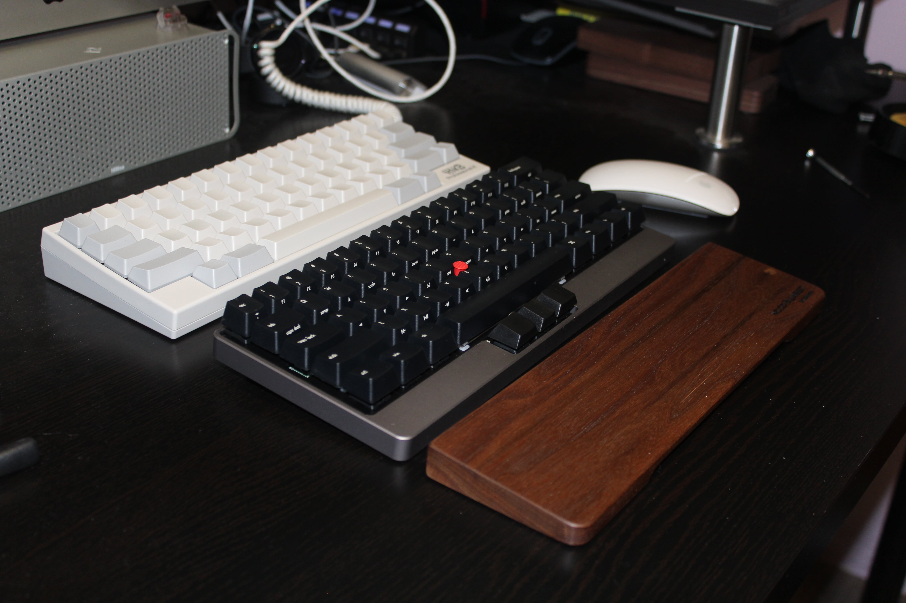